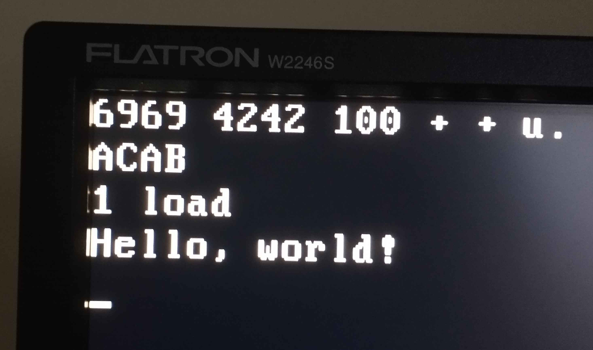

Fitting a Forth in 512 bytes
Software is full of circular dependencies if you look deep enough. Compilers written in the language they compile are the most obvious example, but not the only one. To compile a kernel, you need a running kernel. Linkers, build systems, shells. Even text editors, if you want to write the code instead of just downloading it. How do you break this cycle?1 Since the bootstrapping problem has first come to my attention, I've been drawn to this unique area of software engineering. Not out of fear that someone would try to implement a trusting trust attack, but simply as an interesting challenge.
11 years ago, vanjos72 described on Reddit what he calls a thought experiment: what if you were locked in a room with an IBM PC, with no operating system on it? What would be the minimum amount of software you'd need to start out with to bootstrap back into comfort?
As it happens, I've recently found myself with an abundance of free time on my hands, so I've decided to make this more than a thought experiment. Alas, my computer didn't come equipped with front panel switches, so some software needs to be present on the computer already...
The absolutely minimal option would be a simple program that accepts input from the keyboard, and then jumps to it. Since the keyboard input routines in the BIOS implement alt+numpad escape codes, you don't even need to write any base conversion code.2 Moreover, the loop doesn't even need an end condition — just write to the buffer backwards until you run into the existing code and overwrite the jump target. This approach takes a mere 14 bytes:3
6a00 push word 0
07 pop es
fd std
bf1e7c mov di, buffer+16 ; Adjust to taste. Beware of fenceposting.
input_loop:
b400 mov ah, 0
cd16 int 0x16
aa stosb
ebf9 jmp short input_loop
buffer:
However, I do not find the prospect of entering code this way anywhere near appealing. I've decided that, since the BIOS loads an entire sector anyway, any bootstrap seed that fits into the bootsector is fair game.4 Obviously, one would want to maximize the utility of the chosen program. What is the most powerful thing we can fit in 510 bytes?
Many interesting sector-sized programs have been written. In particular, Oscar Toledo has authored a wide variety of examples. This includes various games, such as a DooM-like raycasting game or a chess AI, as well as a basic BASIC interpreter, but perhaps the most relevant one for our usecase is bootOS:
bootOSis a monolithic operating system that fits in one boot sector. It's able to load, execute, and save programs. Also keeps a filesystem.
It exposes its filesystem routines with an interrupt interface, and includes a builtin command that allows creating a file by typing in its hexdump. Very neat, but clearly mostly intended as a multiplexer between other sector-sized programs.
What I would seek is a solution that minimizes typing in hand-assembled machine code. Ideally, it would be a programming language, but one that, unlike BASIC, can be extended at runtime. If you've read the title of this post, you already know what I settled on — as it turns out, it's possible to fit a barebones Forth in a bootsector. You can see the code in the Miniforth repository on GitHub, but I will include most of it here.
The entire Forth takes, at this moment, 504 bytes. As you might expect, the development process involved being on a perpetual lookout for byte-saving opportunities. However, when I published what I thought was quite tightly optimized code, Ilya Kurdyukov came along and managed to find 24 bytes to be saved! I promptly reinvested this saved space in new features.
A primer on Forth
If you've ever written anything in Forth, you can safely skip this section.
Forth is a stack-based language. For example, a number will push its value onto
the stack, while the + word will pop two numbers and push their sum. A
common debugging utility, but one not included in Miniforth, is the
.s word, which prints the contents of the stack.
1 2 3 + .s <2> 1 5 ok
The user can define their own words with : and ;. For example:
: double dup + ; ok 3 double . 6 ok
This defines the word double, which does the same thing as dup +. dup, by
the way, is one of Forth's stack manipulation words. It duplicates the top
element on the stack:
42 dup .s <2> 42 42 ok
This is basically the entire language. There are some standard facilities for conditionals and loops, but we don't need to concern ourselves with those for now, as they can be built on top of Miniforth later on.
To talk about the effect a word has on the state of the stack, we use a notation like this:
dup ( a -- a a )
swap ( a b -- b a )
The list before the -- are the inputs, with the top of stack listed last.
After the --, we list the outputs, which start at the same stack depth.
This lets us succintly describe the common aspects of a word.
Threaded code
While some Forth systems do include full-blown, optimizing compilers similar to
those one'd see in a typical programming language, there is a much simpler
strategy. After all, everything a Forth word can do is execute other words, so a
sequence of call instructions gets us very close:
DOUBLE:
call DUP
call PLUS
ret
However, this ties up the hardware x86 stack for the return stack, making us
handroll a separate stack for the actual user-level stack (known as the
parameter stack). As accessing the parameter stack is much more common, we'd
like to use the push and pop instructions for that, and instead handroll a
mechanism similar to call. Firstly, let's simply store a list of pointers to
words:
DOUBLE:
dw DUP
dw PLUS
The way this comes to life is that each primitive word fetches the address of
the next word from memory, and jumps to it. A pointer to this sequence of
pointers is kept in SI, so that the lodsw instruction allows for easy
processing of this list:
mov si, DOUBLE
lodsw
jmp ax
DUP:
pop ax
push ax
push ax
lodsw
jmp ax
PLUS:
pop ax
pop bx
add ax, bx
push ax
lodsw
jmp ax
This common code can be abstracted away into a macro, which is traditionally
called NEXT:
%macro NEXT 0
lodsw
jmp ax
%endmacro
This mechanism, by the way, is known as threaded code. No relation to the concurrency primitive.
What happens if one compiled word calls another one, though? This is where the
return stack comes in. It might feel natural to use the BP register for this
stack pointer. However, in 16-bit x86, there isn't actually a [bp] addressing
mode. The closest you can get is [bp+imm8], which means that accessing the
memory at bp wastes a byte to specify that you do not want an offset. This is
why I use the di register for the return stack instead. Overall, this choice
saves 4 bytes.
Anyway, here is how the return stack is used to handle compiled words calling each
other. Pushing onto the return stack is particularily nice, since it's just the
stosw instruction.
DOUBLE:
call DOCOL
dw DUP
dw PLUS
dw EXIT
DOCOL: ; short for "do colon word"
xchg ax, si ; used here as `mov ax, si`, but swaps with
; ax are only one byte, while `mov`s are two bytes
stosw
pop si ; grab the pointer pushed by `call`
NEXT
EXIT:
dec di
dec di
mov si, [di]
NEXT
This is pretty much the execution strategy used by Miniforth, with one simple,
but significant improvement — the value on top of the stack is stored in the
BX register. This allows skipping a push and pop in many primitives:
PLUS:
pop ax
add bx, ax
NEXT
DROP:
pop bx
NEXT
DUP:
push bx
NEXT
One case is still unresolved, though. What happens if a word contains a number,
such as : DOUBLE 2 * ;? This is handled by LIT, which will fetch the literal
that follows out of the pointer stream:
DOUBLE:
call DOCOL
dw LIT, 2
dw MULT
dw EXIT
LIT:
push bx
lodsw
xchg bx, ax
NEXT
The dictionary
We need a way to locate the implementation of the words the user types in.
This is the role of the dictionary. I use a structure similar to many other
small-scale Forths — a singly linked list of word headers, directly prepended
before the code of each word. Out of tradition, the head of the list is kept
in a variable called LATEST.

The most significant bits of the name length field also store some flags:
F_IMMEDIATE equ 0x80
F_HIDDEN equ 0x40
F_LENMASK equ 0x1f
If a word is marked as IMMEDIATE, it will be executed immediately, even if
we're currently compiling a definition. For example, this is used to implement
;. If a word is marked as HIDDEN, it is ignored when searching through the
dictionary. Apart from being used as a rudimentary encapsulation mechanism, this
can be used to implement the traditional Forth semantics where a redefinition
can refer to the previous word with the same name (and RECURSE is used when
you want the definition currently being compiled). However, towards the end of
development, I have removed the code that actually does this from the default
implementation of : and ;.
Compression
It is usually not worth it to use compression when both the decompressor and its
payload have to fit in merely 512 bytes. However, in a Forth implementation, one
thing that's repeated very often is the implementation of NEXT.
ad lodsw
ffe0 jmp ax
We could try to save some bytes by replacing these with jumps to a shared copy.
However, a short jump still takes two bytes — not a significant saving. As it
turns out, a special compression scheme that can only handle this one repeating
pattern is worth it, as long as you combine it with the following observation:
NEXT is almost always followed by the dictionary entry of the next primitive,
of which the link field is predictable.
I chose to implement a compression scheme where every 0xff byte is replaced
with NEXT, followed by a link field, which is computed based on the previous
occurence of an 0xff byte. This strategy saved 19 bytes when I introduced
it.5
At first, I used a 0x90 byte for this — after all, it's the opcode of nop,
which I'm definitely not going to be using. However, the byte can still occur in
the immediate bytes of an instruction. It wasn't a problem at first, but when
the code was shifting around in memory, various addresses and offsets became
0x90 often enough to be a nuisance. 0xff doesn't seem to have this problem.
To create a link, we copy the value of LATEST to the decompressor output, and
update LATEST to point to the word we've just written. This can be done in a
very compact sequence of instructions, but it still takes enough bytes that it
is worthy it to factor it out as a subroutine — it is also used by the
implementation of :, which creates dictionary entries at runtime.
; Creates a dictionary linked list link at DI.
MakeLink:
mov ax, di
xchg [LATEST], ax ; AX now points at the old entry, while
; LATEST and DI point at the new one.
stosw
ret
The decompressor used to make use of an interesting trick, where instead of a short forward jump, an opcode is placed so the immediate argument it requires eats the instructions we want to jump over. That is, instead of
jmp short .after
.write:
stosb
.after:
you write
3c db 0x3c ; skip the stosb below by comparing its opcode with AL
.write:
aa stosb
Thus, if some other code jumps to .write, the stosb executes, but this
codepath just does cmp al, 0xaa. At first, I didn't think of the cmp al
instruction, and a mov into a throwaway register instead. This backfired
spectacularily because of my inability to actually pick
a register that can be safely overwritten.
Ilya Kurdyukov then demonstrated that the same bytecount can be achieved
without this kind of "magic". An analogous modification allowed
me to remove the other occurence of this trick too. The essence is that instead
of trying to skip over the stosb, we execute it unconditionally before the
codepaths branch, and then essentially undo it with dec di if necessary:
SPECIAL_BYTE equ 0xff
mov si, CompressedData
mov di, CompressedBegin
mov cx, COMPRESSED_SIZE
.decompress:
lodsb
stosb
cmp al, SPECIAL_BYTE
jnz short .not_special
dec di
mov ax, 0xffad ; lodsw / jmp ax
stosw
mov al, 0xe0
stosb
call MakeLink
.not_special:
loop .decompress
Actually generating the compressed stream is more involved. Because I want jumps
between the compressed and uncompressed portions to work, the assembler needs to
believe it is writing the code at the location it will actually run. I first
attempted to do this by adjusting the org after each SPECIAL_BYTE, but
unfortunately, yasm didn't like that.
boot.s:137: error: program origin redefined
Clearly, a separate post-processing step is necessary. I wrote a macro to shim the bytes the decompressor will insert:
%macro compression_sentinel 0
db SPECIAL_BYTE
dd 0xdeadbeef
%endmacro
This has the added benefit of allowing a simple automated way to verify that no
SPECIAL_BYTEs slipped in by accident.
I still had to allocate the space for the compressed data. I choose the following layout:
- Uncompressed code starts at
7C00— initialization, decompression, and the outer interpreter. - Compressed data immediately follows, filling up the bootsector up to a moment
before
7E00. - The decompression buffer is allocated immediately after that, which is where
yasmoutputs the target contents.
To achieve this, I needed to know exactly how much space needs to be allocated
for the compressed data. First, I calculate the exact number of bytes saved by
incrementing a counter in the compression_sentinel macro:
%assign savings 0
%macro compression_sentinel 0
%assign savings savings+4
db SPECIAL_BYTE
dd 0xdeadbeef
%endmacro
Then, I simply subtract this from the size of the uncompressed segment:
CompressedData:
times COMPRESSED_SIZE db 0xcc
CompressedBegin:
; ...
CompressedEnd:
COMPRESSED_SIZE equ CompressedEnd - CompressedBegin - savings
The post-processing is done by a simple Python script:
SPECIAL_BYTE = b'\xff'
SENTINEL = SPECIAL_BYTE + b'\xef\xbe\xad\xde'
with open('raw.bin', 'rb') as f:
data = f.read()
# Recognize the reserved space by an arbitrary, but relatively large threshold
# of 20 repeated \xcc bytes.
output_offset = data.index(b'\xcc' * 20)
chunks = data[output_offset:].lstrip(b'\xcc').split(SENTINEL)
assert SPECIAL_BYTE not in chunks[0]
compressed = bytearray(chunks[0])
for chunk in chunks[1:]:
assert SPECIAL_BYTE not in chunk
compressed.extend(SPECIAL_BYTE)
compressed.extend(chunk)
# Make sure that exactly the right amount of space is allocated
# for the compressed data.
assert b'\xcc' * len(compressed) in data
assert b'\xcc' * (len(compressed) + 1) not in data
output = data[:output_offset] + compressed
print(len(output), 'bytes used')
output += b'\x00' * (510 - len(output))
output += b'\x55\xaa'
with open('boot.bin', 'wb') as f:
f.write(output)
The same script also generates an extended disk image, which contains some smoke-testing code in block 1:
output += b'\x00' * 512
output += open('test.fth', 'rb').read().replace(b'\n', b' ')
output += b' ' * (2048 - len(output))
with open('test.img', 'wb') as f:
f.write(output)
compression_sentinel is most often used by the defcode macro, which creates
the dictionary entry for a primitive word. It takes a label (which can then be
used to jump to the implementation of some word), the name of the word as a string,
and optionally, some flags to be ORed into the length field:
; defcode PLUS, "+"
; defcode SEMI, ";", F_IMMEDIATE
%macro defcode 2-3 0
compression_sentinel
%strlen namelength %2
db %3 | namelength, %2
%1:
%endmacro
This is then used to define the primitives. The code essentially falls-through
into a defcode:
defcode PLUS, "+"
pop ax
add bx, ax
defcode MINUS, "-"
pop ax
sub ax, bx
xchg bx, ax
defcode PEEK, "@"
; ...
However, DOCOL, EXIT and LIT also use
the compression mechanism for their NEXTs. Since the link field is still
written out, this essentially creates bogus dictionary entries. Fortunately, the
first opcode of EXIT and LIT has the F_HIDDEN bit set, so this is not a
problem:
CompressedBegin:
DOCOL:
xchg ax, si
stosw
pop si ; grab the pointer pushed by `call`
compression_sentinel
LIT:
push bx
lodsw
xchg bx, ax
compression_sentinel
EXIT:
dec di
dec di
mov si, [di]
defcode PLUS, "+"
; ...
Variables?
Immediate load instructions tend to have shorter encodings than loads from memory:
be3412 mov si, 0x1234
8b363412 mov si, [0x1234]
This is why Miniforth stores most of its variables in the immediate fields of instructions (a practice known as self-modifying code). Of course, this means that the address of these variables will change on every edit of the code, which is problematic, since we will be wanting to access these variables in Forth code. The typical way of exposing a variable is to create a word that pushes its address. However, that's way too expensive with our constraints. What I settled on is pushing the addresses onto the stack at startup. This can be done with only 2 bytes for each address, by simply defining the initial contents of the stack as data:
org 0x7c00
jmp 0:start
stack:
dw HERE
dw BASE
dw STATE
dw LATEST
start:
; ...
mov sp, stack
Even when a variable's address needs to be pushed onto the stack, this
self-modifying code strategy saves bytes if a variable needs to be initialized —
the best way to initialize a variable is to simply allocate it within the
bootsector and dw the initial value there, which exactly evens out the stack
data, and keeps the advantage of the shorter instruction encoding.
Initialization code
The first thing done after booting is setting up the segment registers and stack. The direction flag is also cleared, so that the string instructions work in the right direction.
jmp 0:start
; ...
start:
push cs
push cs
push cs
pop ds
pop es
pop ss
mov sp, stack
cld
There are a two notable things about this code. Firstly, segment registers are
set through the stack. This is a byte-saving trick I've picked up from
bootBASIC — it allows having to initialize a general-purpose register to zero:
31c0 xor ax, ax ; through AX - 8 bytes
8ed8 mov ds, ax
8ec0 mov es, ax
8ed0 mov ss, ax
0e push cs ; through the stack - 6 bytes
0e push cs
0e push cs
1f pop ds
07 pop es
17 pop ss
Secondly, one would think that, while the stack is being repointed, a small race
condition window occurs — if an interrupt happened between pop ss and mov sp,
chaos could ensue if the previous value of SP was in an unlucky place in memory.
Of course, I could just cross my fingers and hope this doesn't happen if the 2
bytes required to wrap this in an cli/sti pair were too much. However, it
turns out that this trade-off is not necessary due to an obscure corner of the
x86 architecture. To quote the Volume 2B of the x86 Software Developer's Manual:
Loading the SS register with a POP instruction6 suppresses or inhibits some debug exceptions and inhibits interrupts on the following instruction boundary. (The inhibition ends after delivery of an exception or the execution of the next instruction.) This behavior allows a stack pointer to be loaded into the ESP register with the next instruction (POP ESP)7 before an event can be delivered.
After the segments, stack and direction flag are set up, the decompressor is
ran. Crucially, it does not use the DL register, which contains the BIOS disk
number from which we were booted. It is then poked into the implementation of
load (which is in the compressed segment), and pushed onto the stack for later
use by user code:
mov [DRIVE_NUMBER], dl
push dx ; for Forth code
The outer interpreter
At this point, we reach the outer interpreter - the part of a Forth system
that processes user input. The name "outer interpreter" distinguishes it from
the inner interpreter, which is the component that coordinates the execution
within a defined word, and consists of NEXT, DOCOL, EXIT, and LIT.
Normally, a Forth would expose the building blocks of its outer interpreter as words in the dictionary, such as
REFILL(read a line of input from the currently executing source),WORD(parse a word from the input stream),FIND(look up a word in the dictionary),>NUMBER(convert a string to number).
In Miniforth, no attention is paid to this practice at all. Dictionary headers
cost bytes, and so does communicating only through the stack. In fact, WORD
and >NUMBER are melded together into one routine that does the job of both —
that way, the loop can be shared, which saves bytes.
This monolithic architecture also lets us decide that BX and DI are not
reserved for the top of stack and the return stack pointer, respectively, while
the outer interpreter is executing. This significantly helps with register
starvation within these comparatively complex parts of the system. These
registers are set up just before jumping to a word, and saved after it returns.
Keyboard input
After initialization is completed, the code falls through to ReadLine, the
routine for reading in an input line from the keyboard. We will also jump back
here later, when the current line of input is exhausted. The input buffer is at
0x500, directly after the BDA. While the idiomatic string format for Forth
uses a separate length field, this buffer is NULL-terminated, as that is easier
to handle when parsing. The pointer to the unparsed fragment of the input is
stored in InputPtr, which is the only variable which does not use the
self-modification technique, as it does not need to be explicitly initialized —
it naturally gets written to before it is read.
InputBuf equ 0x500
InputPtr equ 0xa02 ; dw
ReadLine:
mov di, InputBuf
mov [InputPtr], di
.loop:
mov ah, 0
int 0x16
cmp al, 0x0d
je short .enter
stosb
cmp al, 0x08
jne short .write
dec di
cmp di, InputBuf ; underflow check
je short .loop
dec di
.write:
call PutChar
jmp short .loop
.enter:
call PutChar
mov al, 0x0a
int 0x10
xchg ax, bx ; write the null terminator by using the BX = 0 from PutChar
stosb
InterpreterLoop:
call ParseWord ; returns length in CX. Zero implies no more input.
jcxz short ReadLine
The BIOS interrupt for getting a character from the keyboard does not print the key — we have to do that ourselves. This is done with the "TELETYPE OUTPUT" function, which already handles special characters like backspace or newline.
PutChar:
xor bx, bx
mov ah, 0x0e
int 0x10
ret
This function has its deficiencies. For example, the icky CRLF line endings are
needed (CR to move the cursor to the beginning of the line, and LF to move it
to the next line). Also, the backspace character only moves the cursor back a
character, and does not erase it. To get the behavior we've come to expect, it
would be necessary to print \b \b (to be fair, this is also the case on modern
terminals). I chose to skip that.
Finally, Ralf Brown's Interrupt List mentions that some BIOSes clobber BP when the printed character causes the screen to scroll. This does not concern us, as we do not use this register at all.
Parsing
After we read in a line, we need to parse it into words. This is done on demand
— each word is executed (or compiled, depending on the state), as soon as it is
parsed. Apart from the interpreter loop, ParseWord is also called by
the implementation of : (to get the name of the word being defined).
As mentioned before, this routine also computes the numeric value of the word, with the assumption that it's valid. There is no error checking in this regard — if a word is not found in the dictionary, its numeric value is pushed, which is probably nonsense if this wasn't intended.
We start out by skipping any whitespace in the input buffer:
; returns
; DX = pointer to string
; CX = string length
; BX = numeric value
; clobbers SI and BP
ParseWord:
mov si, [InputPtr]
; repe scasb would probably save some bytes here if the registers worked out - scasb
; uses DI instead of SI :(
.skiploop:
mov dx, si ; if we exit the loop in this iteration, dx will point to the first letter
; of the word
lodsb
cmp al, " "
je short .skiploop
Note the way the pointer to the beginning of the string is saved. The loop will
go one byte past the whitespace, so storing it after the loop would require a
separate decrement. Instead, we update the register with each iteration of the
loop, but before the pointer is incremented by lodsb.
At this point, the AL register is loaded with the first character of the word.
Thus our next loop will need to do lodsb at its end.
xor cx, cx
xor bx, bx
.takeloop:
and al, ~0x20
jz short Return ; jump to a borrowed `ret` from some other routine
This and instruction is interesting, as it does three things at once. It
detects both spaces and null bytes in one fell swoop, but also also turns off
the bit that differs between uppercase and lowercase letters, which allows
handling both cases of hexadecimal numbers at no extra cost.
If we haven't detected the end of the word, we increment the length counter and convert the digit to its numeric value:
inc cx
sub al, "0" &~0x20
cmp al, 9
jbe .digit_ok
sub al, "A" - ("0" &~0x20) - 10
.digit_ok
cbw
cbw is a little-known instruction that converts a signed number from byte to
word, but for us it's just a shorter mov ah, 0. In a perhaps similar vein,
we use the signed multiply imul, because it has more options for how it uses
the registers than the unsigned mul. The specific form used here allows
multiplying by an immediate and doesn't overwrite DX with the upper half of
the product.8
This particular instruction needs to be encoded manually to force the literal width to be 2 bytes wide.9
; imul bx, bx, <BASE> but yasm insists on encoding the immediate in just one byte...
db 0x69, 0xdb
BASE equ $
dw 16
add bx, ax ; add the new digit
Finally, we set up for the next iteration of the loop. We use a similar trick as before, where a pointer result is updated in each iteration to avoid a separate decrement at the end — we need to make sure that the input pointer doesn't point after the terminator.
mov [InputPtr], si
lodsb
jmp short .takeloop
Dictionary Lookup
After a word is parsed, we try to look it up in the dictionary. For each entry,
we need to compare the length of the name, and if it matches, the name itself.
By including F_HIDDEN in the mask, we automatically handle hidden entries,
too. The way we're comparing the length might look a bit weird. The goal is to
keep the F_IMMEDIATE bit in AL, so that we don't have to keep around the
pointer to the header of this word. This is one of Ilya Kurdyukov's clever
optimizations.
InterpreterLoop:
call ParseWord
jcxz short ReadLine
; Try to find the word in the dictionary.
; SI = dictionary pointer
; DX = string pointer
; CX = string length
; Take care to preserve BX, which holds the numeric value.
LATEST equ $+1
mov si, 0
.find:
lodsw
push ax ; save pointer to next entry
lodsb
xor al, cl ; if the length matches, then AL contains only the flags
test al, F_HIDDEN | F_LENMASK
jnz short .next
mov di, dx
push cx
repe cmpsb
pop cx
je short .found
.next:
pop si
or si, si
jnz short .find
; If we reach this point, it's a number.
; ...
.found:
pop bx ; discard pointer to next entry
; When we get here, SI points to the code of the word, and AL contains
; the F_IMMEDIATE flag
This part shows another advantage of not splitting the interpreter into reusable chunks — we can easily exit into two different codepaths, based on the result of the lookup.
Should we execute it?
The system can be in two possible states:
- interpreting — all words should be executed
- compiling — immediate words should be executed
In other words, a word should be executed if it is immediate, or we're
interpreting. We store this flag in the immediate field of an or instruction —
it will be set to 0 when compiling:
; When we get here, SI points to the code of the word, and AL contains
; the F_IMMEDIATE flag
STATE equ $+1
or al, 1
xchg ax, si ; both codepaths need the pointer to be in AX
jz short .compile
; Execute the word
; ...
The most important words that need to change the state are : and ;, but they
just jump to [ and ] — words that allow to temporarily drop back to
interpreted mode while compiling a word. The typical usecase is to eagerly
calculate the value of a constant expression:
: third-foo [ foos 3 cells + ] literal @ ;
Since the two values of STATE differ only by 1, we can switch between them
with inc and dec. This has the disadvantage that they are no longer
idempotent, but this shouldn't matter to well-written code:
defcode LBRACK, "[", F_IMMEDIATE
inc byte[STATE]
defcode RBRACK, "]"
dec byte[STATE]
Executing the word
If we decided to execute the word, we retrieve BX and DI, and set up SI
so that NEXT will jump back to .executed:
; Execute the word
RetSP equ $+1
mov di, RS0
pop bx
mov si, .return
jmp ax
.return:
dw .executed
.executed:
mov [RetSP], di
push bx
jmp short InterpreterLoop
Handling numbers
There is no F_IMMEDIATE flag for numbers, so we just need to check the state
to decide. It's a simple comparison, but if we're clever enough, you can save a
byte here. Let's look again at the code that searches the dictionary. What value
will AH have when we reach the number case?
.find:
lodsw
push ax ; save pointer to next entry
lodsb
xor al, cl ; if the length matches, then AL contains only the flags
test al, F_HIDDEN | F_LENMASK
jnz short .next
mov di, dx
push cx
repe cmpsb
pop cx
je short .found
.next:
pop si
or si, si
jnz short .find
; AH = ?
Do you see it? At this point, AH is zero, since it contains the higher half of the pointer
to the next word, which we know is NULL, as we just got to the end of the list.
This allows us to check the value of STATE without loading it into a register
or any immediate bytes:
; It's a number. Push its value - we'll pop it later if it turns out we need to compile
; it instead.
push bx
cmp byte[STATE], ah
jnz short InterpreterLoop
; Otherwise, compile the literal.
; ...
Compiling things
The output pointer for the compilation process is called HERE. It starts out
just after the decompressed data. The function that writes out a word into this
area is called COMMA, since the Forth word that does this is ,.
COMMA:
HERE equ $+1
mov [CompressedEnd], ax
add word[HERE], 2
ret
It is used in a straight-forward way to compile both numbers and words. We can share the tail, though — compiling a word will jump into the middle of compiling a number:
; Otherwise, compile the literal.
mov ax, LIT
call COMMA
pop ax
.compile:
call COMMA
jmp short InterpreterLoop
The last piece of the puzzle are : and ;. Let's look at : first. Since
ParseWord makes use of BX and SI, we need to save these registers.
Moreover, since we're writing the many parts of a dictionary header, we'll load
HERE to DI to streamline things. This is a lot of registers that we need to
push. However, we don't actually need to modify any register, so we can just
save all the registers with pusha.
defcode COLON, ":"
pusha
mov di, [HERE]
call MakeLink ; link field
call ParseWord
mov ax, cx
stosb ; length field
mov si, dx
rep movsb ; name field
mov al, 0xe8 ; call
stosb
; The offset is defined as (call target) - (ip after the call instruction)
; That works out to DOCOL - (di + 2) = DOCOL - 2 - di
mov ax, DOCOL - 2
sub ax, di
stosw
mov [HERE], di
popa
jmp short RBRACK ; enter compilation mode
; is much shorter. We merely need to compile EXIT and go back to
interpretation mode:
defcode SEMI, ";", F_IMMEDIATE
mov ax, EXIT
call COMMA
jmp short LBRACK
The way these words jump to another word at the end is quite convenient.
Remember how the NEXTs are written out as part of the defcode of the next
word? One of the words needs to be last in memory, and then it won't have any
"next word" after it. : and ; are perfect candidates for this, since they
don't need a NEXT at all.
Loading code from disk
Since we don't want to type in disk routines on every boot, we need to include
a way to run source code loaded from disk. A filesystem would be its own beast,
but Forth tradition has a minimalistic solution: the disk is simply divided
into 1 KiB blocks, in which source code is stored, formatted as 16 lines of 64
characters. Then load ( blknum -- ) will execute the block with the specified
number.
We map block 0 into LBA 0 and 1, block 1 into LBA 2 and 3, and so on. This does mean that block 0 is partially taken by the MBR and LBA 1 is wasted, but I'm not particularily bothered by that.
Since the original BIOS service at int 0x13 / ah = 0x02 requires CHS
addressing, I decided to use the EDD extension variant (ah = 0x42). This does
mean that floppies are not supported, but I wasn't planning on using any anyway.
To use the EDD interface, we need to build a disk address packet, which looks like this:
db 0x10 ; size of packet
db 0 ; reserved
dw sector_count
dw buffer_offset, buffer_segment
dq LBA
We use a hybrid strategy to create this packet. The first part is kept as data in the bootsector, but the rest is written at runtime, even if it doesn't change. The "template" needs to be in a place where we can write after it, so the perfect place is just before the compressed data:
DiskPacket:
db 0x10, 0
.count:
dw 2
.buffer:
; rest is filled out at runtime, overwriting the compressed data,
; which isn't necessary anymore
CompressedData:
times COMPRESSED_SIZE db 0xcc
The first four bytes of the packet are random enough to be hardcoded. However,
when it comes to the address of the buffer, we can do better. We will need to
write said address to InputPtr anyway. The most direct way to do that takes
six bytes:
c706020a0006 mov word[InputPtr], BlockBuf
However, we can get that value in AX at no extra cost:
b80006 mov ax, BlockBuf
a3020a mov [InputPtr], ax
Thus, we can write these two bytes of the disk packet with only 1 byte of code:
defcode LOAD, "load"
pusha
mov di, DiskPacket.buffer
mov ax, BlockBuf
mov word[InputPtr], ax
stosw
Next, we need to write the segment (0000) and the LBA (which ends in six 00
bytes). I like to think of the instructions corresponding to these like so:
31c0 xor ax, ax ; LBA zeroes
ab stosw ; segment
d1e3 shl bx, 1 ; LBA data
93 xchg ax, bx ; LBA data
ab stosw ; LBA data
93 xchg ax, bx ; segment
ab stosw ; LBA zeroes
ab stosw ; LBA zeroes
ab stosw ; LBA zeroes
That is, we write the six LBA zeroes in 5 bytes of code. Writing out the segment
only took moving the xor ax, ax earlier, and an additional stosw and xchg ax, bx. Thus, it is neutral at 2 bytes (but we need to write it out in code so
that the pointer is right for the rest of the packet). Lastly, of course, we
have the actual LBA data, which changes.
While AX is zero, let's take this opportunity to poke in a null terminator
after the buffer:
mov [BlockBuf.end], al
Now we're ready to call the BIOS function. If it errors out, we just loop, as recovering is complicated — the most annoying complication is that the sector count in the packet is overwritten by the number of sectors successfully read, which breaks our template.
DRIVE_NUMBER equ $+1
mov dl, 0
mov ah, 0x42
mov si, DiskPacket
int 0x13
jc short $
popa
pop bx
Printing numbers
u. prints an unsigned number, followed by a space. Since splitting the number
into digits with division yields the least-significant digit first, we push the
digits onto the stack, and then pop and print in a separate loop. The space is
printed by pushing a fake "digit" that will get converted into a space. This
also lets us detect when we popped all the digits — the printing loop stops when
it just printed a space.
defcode UDOT, "u."
xchg ax, bx
push " " - "0"
.split:
xor dx, dx
div word[BASE]
push dx
or ax, ax
jnz .split
.print:
pop ax
add al, "0"
cmp al, "9"
jbe .got_digit
add al, "A" - "0" - 10
.got_digit:
call PutChar
cmp al, " "
jne short .print
pop bx
s: — string poke
s: is a feature which is, I believe, uniquely relevant to bootstrapping. This
word takes the address of a buffer, and copies the rest of the current input
line there. Without this, a significant amount of code would've had to be typed
in twice: first to actually run it and bootstrap a disk block editor, and then
again to actually save it on disk.
The implementation is just a simple loop, but the setup around it is noteworthy
— we want to load the input pointer into SI, but we also need to preserve SI
so that we can return properly. By using xchg, we can preserve it in
[InputPtr] for the duration of the copy, at no extra cost:
;; Copies the rest of the line to buf.
defcode LINE, "s:" ; ( buf -- buf+len )
xchg si, [InputPtr]
.copy:
lodsb
mov [bx], al
inc bx
or al, al
jnz short .copy
.done:
dec bx
dec si
xchg si, [InputPtr]
The destination pointer is kept in BX. While writing at DI would only take a
stosb, getting the pointer in and out of DI outweights this benefit. At the
end, we leave a pointer to the null terminator on the stack. That way, you can
continue the string by just using s: again on the next line. Since we don't
skip any leading whitespace, this is even guaranteed to be properly spaced.
Other primitives
Choosing the primitives to include in Miniforth is perhaps the biggest tradeoff to be made. I am fully expecting that some more primitive words will need to be defined at runtime by poking in opcodes. After all, there aren't any branching words. However, I'm pretty certain that these opcodes will be able to be generated by a simple Forth assembler, rather than simply hardcoded.
Arithmetic as basic as + is indispensible. I am defining both + and -,
though, if I wanted to fit in something more important, I could keep only -
and later define : negate 0 swap - ; and : + negate - ;.
Like any low-level programming language, we need a way to peek and poke values
into memory. The implementation of ! is particularily nice, since we can just
pop directly into [bx]:
defcode PEEK, "@" ; ( addr -- val )
mov bx, [bx]
defcode POKE, "!" ; ( val addr -- )
pop word [bx]
pop bx
There also are variants that read and write only a single byte:
defcode CPEEK, "c@" ; ( addr -- ch )
movzx bx, byte[bx]
defcode CPOKE, "c!" ; ( ch addr -- )
pop ax
mov [bx], al
pop bx
We certainly need some stack manipulation words. dup and drop have
dead simple implementations, and swap is definitely too useful to skip it.
defcode DUP, "dup" ; ( a -- a a )
push bx
defcode DROP, "drop" ; ( a -- )
pop bx
defcode SWAP, "swap" ; ( a b -- b a )
pop ax
push bx
xchg ax, bx
I chose to also include >r and r>, which allow using the return stack as
a second stack for values (but, obviously, only within a single word). This is
quite powerful. In fact, combined with dup, drop and swap, they allow you
to implement any stack manipulation word you can imagine.10
defcode TO_R, ">r"
xchg ax, bx
stosw
pop bx
defcode FROM_R, "r>"
dec di
dec di
push bx
mov bx, [di]
Finally, emit prints a character. This is far enough from the critical path
of the bootstrap, that I would be comfortable with removing this one if need be.
defcode EMIT, "emit"
xchg bx, ax
call PutChar
pop bx
Conclusion
I am pleased with how this turned out. For a system constrained to the boot
sector, I can pretty much call it feature-complete — I can't think of anything
that would significantly simplify the bootstrap, while taking few enough bytes
that it seems remotely within the reach of code golf. This is largely thanks to
Ilya Kurdyukov's help — without it, I wouldn't have been able to fit s: in.
I've found an old PC I can use for my experiments. It boots Miniforth just fine, so I'll be using it from now on.11

If you'd like to see how to bootstrap on top of Miniforth's minimal set of primitives, see the next post in this series.
Enjoyed this article?
You might like my other posts, too. If you'd like to be notified of new ones, you can follow me on Twitter or subscribe to the RSS feed.
I would like to thank my GitHub sponsors for their support: Michalina Sidor and Tijn Kersjes.
I would wager that the typical system involves a tangled strongly connected component of dependencies, rather than just a simple cycle.
And even if that wasn't the case, there are many, many examples of x86 code written with the printable subset of ASCII. I've even done it myself once a few years ago.
Exercise for the reader: the jump to input_loop is unconditional.
How will the code you input from the keyboard ever get executed?
If you, dear reader, find this unsatisfactory, I would like to invite you on your own journey of bootstrapping. It's really quite fun!
The exact savings at the moment are somewhat hard to
calculate, because some words don't make use of the NEXT being appended.
While this passage of the reference only talks about pop ss, an
analogous statement is made in the documentation for mov.
This seems to be one of the many mistakes in the SDM — using a pop esp for this wouldn't work, *because you just invalidated your stack pointer
by doing pop ss. Section 6.8.3 ("Masking Exceptions and Interrupts
When Switching Stacks") in Volume 3A clarifies that all single-instruction
ways to load SP mask the interrupts. I would've quoted that section instead, if
not for the fact that, while it lists many more types of events that are
suppressed, it neglects to mention actual interrupts as one of them...
They do mention some interesting edge-cases, though. For example,
if you're like me, you might be wondering what happens if the processor encounters
a long stream of repeated pop ss or mov ss instructions. The answer?
Only the first one is guaranteed to suppress interrupts. Fair enough.
I suppose it makes sense that this option is only available for imul,
since, by modular arithmetic, the only difference between a signed and
unsigned multiply is in the upper half of the product, which we are discarding
here. Immediates could be useful with mul too, though...
You might ask, why not just declare that BASE is a byte-sized
variable? The answer is that u., which is the word that prints a number,
uses div word[BASE], so that the result is still 16-bit.
This does not include words like PICK — you would need
loops for that. Anything definable as ( <list of names> -- <list of names> )
is fair game, though. Proving this fact is left as an exercise to the
reader.12
A note from the future: I've since switched to dual-booting it on my laptop.
Seriously though, try to devise an infallible strategy for turning a stack effect into a sequence of words that implement it. It's a nice problem.
Twitter: @meithecatte • GitHub: @meithecatte • E-mail: catch-all on this domain